Pulsa para ir a ¿Qué es un diagrama de Venn?
Pulsa para ir a Historia
Pulsa para ir a Propositos & Beneficios
Pulsa para ir a En otros lados
Pulsa para ir a Entretenimiento
A. W. F. Edwards-Branko Grunbaum-Henry John Stephen Smith Pulsa para ir al INICO
¿Qué es un diagrama de Venn?
Un diagrama de Venn usa círculos que se superponen u otras figuras para ilustrar las relaciones lógicas entre dos o más conjuntos de elementos. A menudo, se utilizan para organizar cosas de forma gráfica, destacando en qué se parecen y difieren los elementos. Los diagramas de Venn, también denominados "diagramas de conjunto" o "diagramas lógicos", se usan ampliamente en las áreas de matemática, estadística, lógica, enseñanza, lingüística, informática y negocios. Muchas personas los vieron por primera vez en la escuela cuando estudiaron Matemática o Lógica, ya que los diagramas de Venn se convirtieron en una parte del plan de estudio de la "nueva Matemática" en la década de 1960. Estos pueden ser diagramas sencillos que involucran dos o tres conjuntos con algunos elementos o pueden volverse muy sofisticados, por ejemplo, en presentaciones en 3D, ya que utilizan seis o siete conjuntos o más. Se usan para hacer un análisis detallado y para representar cómo se relacionan los elementos entre sí dentro de un "universo" o segmento determinado. Los diagramas de Venn permiten a los usuarios visualizar los datos de forma clara y con gran alcance y, por este motivo, se utilizan comúnmente en presentaciones e informes. Se relacionan estrechamente con los diagramas de Euler, pero se diferencian en que estos últimos omiten los conjuntos si estos no contienen elementos. Los diagramas de Venn muestran las relaciones incluso si un conjunto está vacío.
Historia
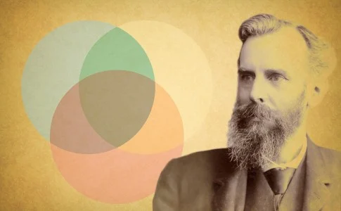
Los diagramas de Venn llevan el nombre del lógico británico, John Venn. Él escribió sobre ellos en un artículo redactado en 1880 titulado "De la representación mecánica y diagramática de proposiciones y razonamientos" en la revista "Philosophical Magazine and Journal of Science".
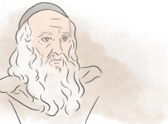
Pero las raíces de este tipo de diagrama se remontan a un período muy anterior, al menos 600 años atrás. Alrededor del año 1200, el filósofo y lógico Ramon Llull (Raimundo Lulio en español) de Mallorca, usó un tipo de diagrama similar, escribió la autora M.E. Baron en un artículo redactado en 1969 que realizaba un seguimiento de su historia. Ella también atribuye el crédito al matemático y filósofo alemán, Gottfried Wilhelm von Leibnitz de haber dibujado diagramas similares a finales de 1600.
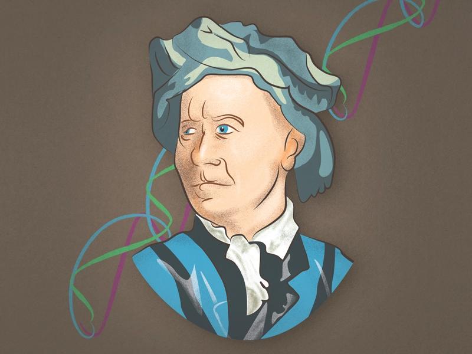
En la década de 1700, el matemático suizo Leonard Euler (que se pronuncia Oy-ler) inventó lo que luego se conocería como "diagrama de Euler", el predecesor más directo del diagrama de Venn. De hecho, John Venn se refería a sus propios diagramas como "círculos de Euler" y no "diagramas de Venn". El filósofo estadounidense Clarence Irving (C.I.) Lewis publicó por primera vez el término "diagramas de Venn" en su libro escrito en 1918 llamado, "A Survey of Symbolic Logic".
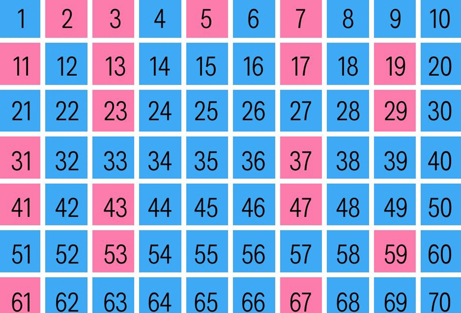
Los diagramas de Venn continuaron evolucionando en los siguientes 60 años con avances de la mano de expertos, como David W. Henderson, Peter Hamburger, Jerrold Griggs, Charles E. “Chip” Killian y Carla D. Savage. Su trabajo se centraba en los diagramas de Venn simétricos y su relación con los números primos o aquellos indivisibles por otros números que no sean 1 y el número mismo. Uno de estos diagramas simétricos, basado en el número primo 7, se conoce ampliamente en las esferas matemáticas como "Victoria".
Otros nombres destacados en el desarrollo de los diagramas de Venn son A. W. F. Edwards, Branko Grunbaum y Henry John Stephen Smith. Entre otras cosas, modificaron las figuras en los diagramas para permitir una representación más sencilla de los diagramas de Venn en un número cada vez mayor de conjuntos.
Propositos & Beneficios
Para la elaboración de algunos diagramas de Veenn ,en el procedimiento se adquiere varios beneficios que nos pueden facilitar y poder desarrollar más nuestras capacidades.
°Organizar información visualmente
para ver la relación entre los conjuntos de elementos, como semejanzas y diferencias. Los estudiantes y profesionales pueden usarlos para pensar la lógica detrás de un concepto y para representar las relaciones para lograr una comunicación visual. Este propósito puede ser básico o muy avanzado.
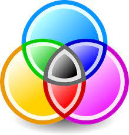
°Comparar dos o más opciones
y ver claramente lo que tienen en común y lo que puede distinguirlos. Esto se puede realizar para seleccionar un servicio o producto importante que se va a adquirir.
°Para resolver problemas matemáticos complejos.
En el caso de que seas un matemático, por supuesto.
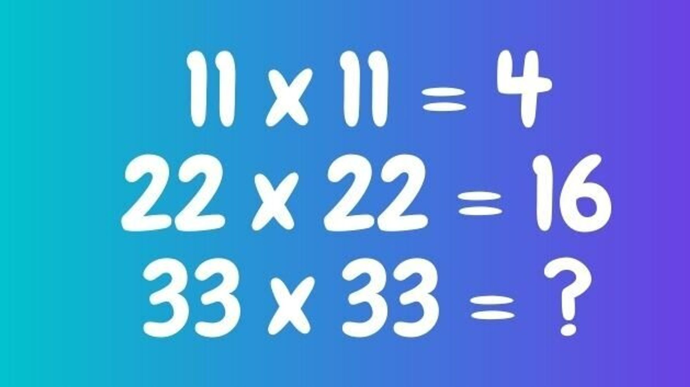
°Comparar conjuntos de datos,
encontrar correlaciones y predecir probabilidades de determinados acontecimientos.
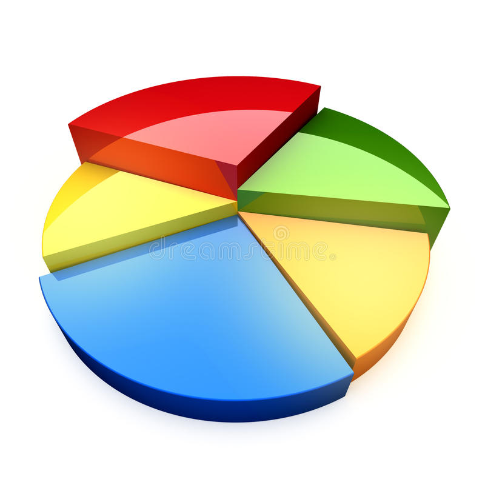
°Razonar la lógica
detrás de declaraciones o ecuaciones, como la lógica booleana detrás de una búsqueda de palabras que involucre las instrucciones "or" y "and" y cómo se agrupan.
En otros lados
Matemática:
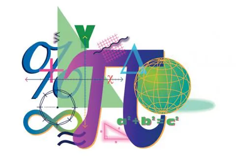
los diagramas de Venn se usan comúnmente en las escuelas para enseñar conceptos matemáticos básicos, como conjuntos, uniones e intersecciones. También se usan en matemática avanzada para resolver problemas complejos y se ha escrito mucho sobre ellos en revistas académicas. La teoría de conjuntos es una rama completa de la matemática.
Estadística y probabilidad:
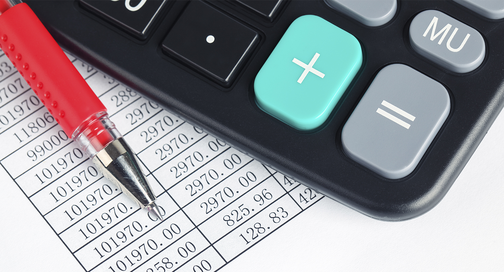
los expertos en estadística usan los diagramas de Venn para predecir la probabilidad de determinados acontecimientos. Esto se relaciona con el campo del análisis predictivo. Se pueden comparar conjuntos de datos distintos para encontrar grados de similitud y diferencia.
Lógica:
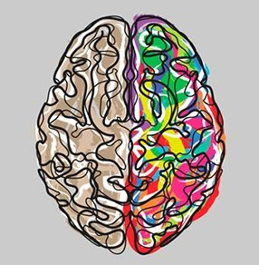
Los diagramas de Venn se usan para determinar la validez de conclusiones y argumentos específicos. En el razonamiento deductivo, si las premisas son verdaderas y la forma del argumento es correcta, entonces la conclusión debe ser verdadera. Por ejemplo, si todos los perros son animales, y nuestra mascota Mojo es un perro, entonces Mojo tiene que ser un animal. Si asignamos variables, podemos decir que los perros son C, los animales son A y Mojo es B. En forma de argumento, decimos: Todos los C son A. B es C. Por lo tanto, B es A. Un diagrama relacionado en lógica se llama "tabla de verdad", que ubica a las variables en columnas para determinar qué es lógicamente válido. Otro diagrama relacionado se llama diagrama de Randolph o diagrama R, llamado así por el matemático John F. Randolph. Este diagrama usa líneas para definir conjuntos.
Lingüística:
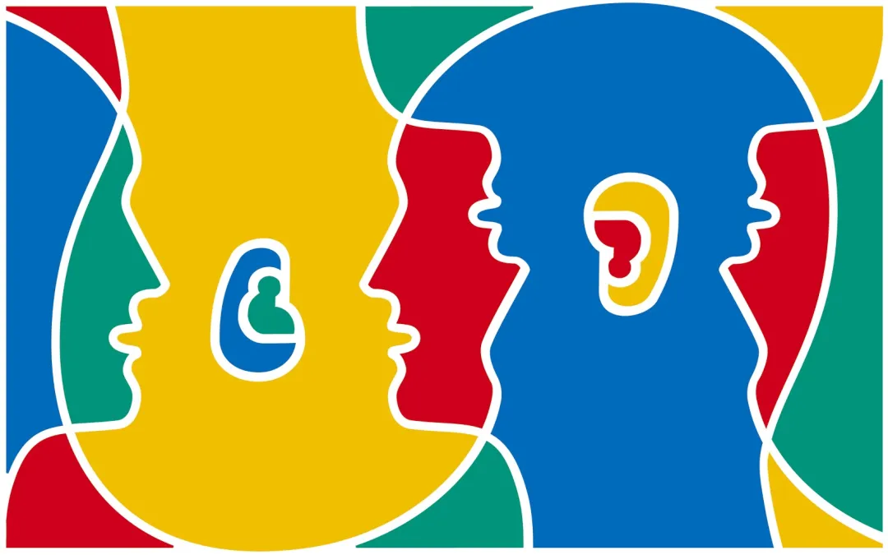
Los diagramas de Venn se han usado para estudiar las diferencias y similitudes entre idiomas.
Enseñar comprensión lectora:
Los maestros pueden usar los diagramas de Venn para mejorar la comprensión lectora de sus alumnos. Los alumnos pueden dibujar diagramas para comparar y contrastar ideas sobre las que están leyendo.
Informática:
Los programadores pueden usar diagramas de Venn para visualizar jerarquías y lenguajes informáticos.
Negocios:
Los diagramas de Venn se pueden usar para comparar y contrastar productos, servicios, procesos o lo que sea que pueda representarse en conjuntos. Y son una herramienta de comunicación efectiva para ilustrar esa comparación.
Entretenimiento
Para los diagramas de Venn ,es justamente que los miremos dentro de forma empresarial o educativo,pero si te dejra que eso no es asi ,pues mira para estos circulos tambien pueden estar en el medio del entretenimiento.
Drama:
en el programa de televisión "NUMB3RS" de CBS, producido desde 2005 hasta 2010, el genio matemático Charles Eppes usa un diagrama de Venn para determinar qué sospechoso encaja con la descripción y tiene un historial violento.
Comedia:
en "Late Night with Seth Meyers" de NBC, el comediante tiene una rutina recurrente llamada "Diagramas de Venn", donde compara dos elementos que parecen no tener ninguna relación para encontrar una similitud graciosa (o eso espera lograr).
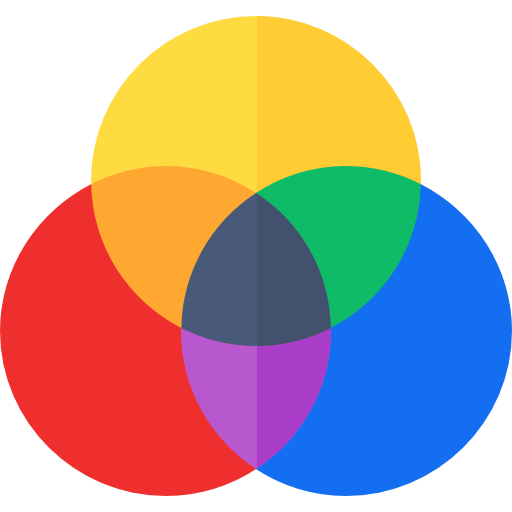